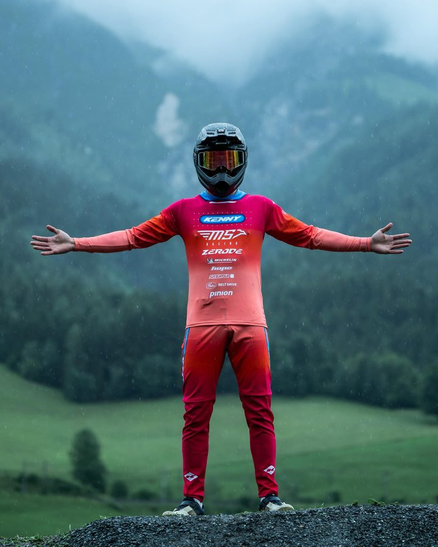
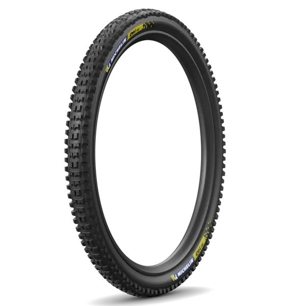

Tuhoto-Ariki Pene
- WC win Cairns 2024
- Champion Junior WC 2022
Tuhoto-Ariki Pene is a New Zealand downhill rider. RidersFanatics currently tracks 6 equipment items for this 2026 race setup, including Zerode G3, SR Suntour RUX 38, SR Suntour Voro Coil. The season record below contains 2 tracked results and 74 cumulative points.
2026 season snapshot
Tuhoto-Ariki Pene is currently ranked 38th of 42 riders in the tracked Men Elite field, with 74 points across 2 recorded starts. The strongest recorded finish is 23rd at Switzerland (June). The season sample contains 0 podiums and 0 top-ten results.
Analysis is limited to results recorded in the RidersFanatics dataset and should not be read as a complete career assessment.
- 38th
- Category rank
- 2
- Recorded starts
- 23rd
- Best finish
- 74
- Points


Drivetrain
Hope pinion
Wheels & Tyres

Michelin DH
Setup analysis
The recorded 2026 build contains 6 identified equipment items. Its documented chassis combines a Zerode G3 frame, a SR Suntour RUX 38 fork, a SR Suntour Voro Coil rear shock. Other published components include Michelin DH, Hope EVO V6Ti. These entries describe the documented race platform; settings, compounds and prototype internals can change by event.
Page generated from the dataset updated 2026-08-17. Equipment is revised when a verifiable change is identified. Read the methodology or report a correction.
Results
| Year | Event | Result | Points |
|---|---|---|---|
| 2026 | Leogang, Austria (June) | 25th | 36 |
| 2026 | Switzerland (June) | 23rd | 38 |